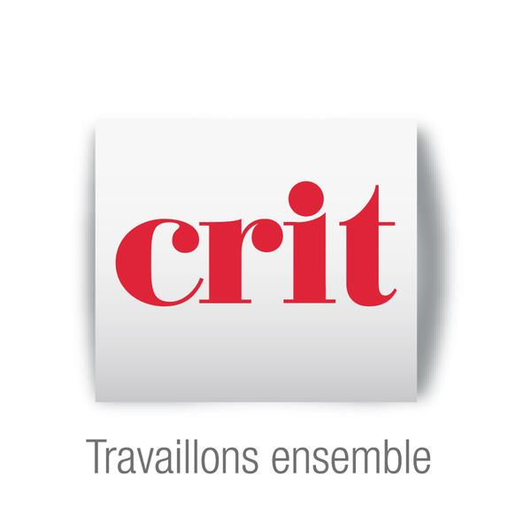

Je m'appelle Thalïa Sahed, j'ai 21 ans et je suis actuellement en deuxième année de BTS Services Informatiques aux Organisation option Solutions Logicielles et Applications Métiers. J'ai comme but de travailler en conception et maintenance de logiciels ou base de données. C'est donc pour cela que je suis actuellement à la recherche d'un stage dans ces domaines, dans le cadre de mes études. L'informatique m'a toujours passionnée depuis l'enfance, j'ai toujours voulu en savoir plus et acquérir des compétences, donc mes études s'orientent vers cet univers qui me motive. Au niveau carrière, j'ai travaillé dans d'autres types de métiers à l'opposé de l'informatique, je suis donc ravie et très enthousiaste de m'orienter dans cette branche qui me fait rêver. En dehors de tout ça, je suis une personne simple, qui aime partager des moments avec sa famille, voyager et découvrir de nouvelles choses tous les jours !
✓ Création et lecture d'algorithmes ✓ Architecture des systèmes d'informations et web ✓ Développement de programmes informatiques ✓ Création et utilisation de bases de données ✓ Informatique de gestion ✓ Traitement des informations (mettre à jour, noter, classer) ✓ Création de programmes en C# et PHP (Classes, dbal, dao,...) ✓ Création d'interfaces WPF/C#
✓ Utilisation de cisco packet tracer ✓ Installation de routeurs et commutateurs ✓ Assemblage et démontage d'un ordinateur (assemblage des composants sur une carte mère) ✓ Utilisation des commandes des systèmes d'exploitation Windows 10 et Linux (unbutu et debian) ✓ Installation de machines virtuelles
• Espagnol - Notions • Anglais - Notions • Anglais technique (informatique) - Moyen
Deuxième année : Brevet de Technicien Supérieur Services Informatiques aux Organisations option Solutions Logicielles et Applications Métiers
Diplômée du Baccalauréat technologique Sciences et Technologie du Management et de la Gestion option Système d'Information de Gestion – Mention Assez Bien
Diplômée du brevet des collèges – Mention Assez Bien
• 2020-2021 : Projet BTS (en cours) – Création d'un logiciel de gestion d'un Escape Game en WPF/C# en intéraction avec une base de données
• 2020 : Projet remplacement stage (confinement) – Création d'un jeu de pendu en WPF/C#, en interaction avec une base de données.
• 2020 : Projet personnel – Attestations des cours SecNum Académie et L'Atelier RGPD
• 2020 : Création d'un portfolio
• 2020 : Création d'un site wordpress pour la présentation d'un projet de développement d'une skill Alexa (whichwine.food.blog)
• 2020 : Challenge SIO en groupe - Développement d'une skill Alexa
• 2019 : Projet Personnel Encadré - Création d'un site statique sur Pablo Picasso en autonomie pour un musée fictif
• 2016-2017 : Projet en groupe - Création de 2 sites statique et dynamique pour l'achat et location fictive de robes de soirées
• 2016 : Projet NUSAB - Représentante et déléguée du Liban à une simulation de conférence des Nations-Unis
• Juin 2016 à aujourd'hui : Babysitter et aide à domicile chez particuliers • 10 août 2018 à mars 2019 : Hôtesse de caisse à Monoprix, Centre Commercial Courier à Annecy  • Février 2018 : Mission d'intérim avec Crit - Employée de rayon libre-service chez E.Leclerc à Cran-Gévrier
J'ai choisis d'aborder pour cette veille technologique le thème de la médecine, en prenant en exemple l'intelligence artificielle (aspect diagnostic) et les robots (aspect robotique).
(IA) IBM Watson
Auteur de l'article : Bastien L, Date de parution : 4 juillet 2019, Où : lebigdata.fr
Source : https://www.lebigdata.fr/ibm-watson-tout-savoir
IBM Watson est un superordinateur créé par IBM, combinant intelligence artificielle et analyse de données pour répondre aux questions plus rapidement qu’un humain . Découvrez tout ce que vous devez savoir à son sujet. Watson est un superordinateur créé par IBM, tirant son nom du fondateur de l’entreprise Thomas J. Watson. Il s’agit d’une » machine à répondre aux questions « , qui combine l’intelligence artificielle avec un logiciel analytique. Pour créer Watson, il aura fallu trois années aux chercheurs d’IBM. L’objectif qu’ils s’étaient fixé était de créer un système capable de répondre plus rapidement que les humains aux questions posées dans le jeu télévisé américain Jeopardy!. Ce projet a mené à la création de l’architecture DeepQA, et de Watson. En 2011, Watson est finalement parvenu à triompher de deux champions de Jeopardy : Ken Jennings et Brad Rutter. Un avatar du système était assis entre les deux joueurs humains. Pour répondre aux questions, le superordinateur se base sur un Data Store regroupant 200 millions de pages d’informations stockées sur une flotte de 90 serveurs. Doté d’une puissance impressionnante, Watson traite ces informations à un taux de 80 teraflops. C’est ce qui lui permet de répondre aux question encore plus efficacement qu’un être humain.
Pourquoi cet article et quel interêt a-t-il ?
Cet article tient informé les personnes d'une avancée révolutionnaire en terme de données genérées et stockées sur une base de données. (Big Data) Cette intelligence artificielle pourrait rendre de grands services, faire avancer la médecine, et revoir tous les codes de la conception que l’on a de la technologie face à la médecine. De plus, plus IBM aura d’utilisateurs ou de personnes interesséss plus elle pourra améliorer son produit.
Robear
Auteur de l'article : Philippe Passebon, Date de parution : 6 mars 2015, Où : industrie-techno.com
Source : https://www.industrie-techno.com/article/video-robear-un-robot-ours-pour-aider-les-invalides.36931
Un laboratoire nippon a conçu un robot capable de soulever des patients. Il permettra d’alléger la tâche des personnels de soin dans un pays dont la part de population active baisse rapidement. Robear peut aider les patients à se lever, à se tenir debout, à marcher ou encore les porter ! Ce robot expérimental vise à pallier la pénurie de personnel soignant à venir au Japon, due au vieillissement de la population. Près de 40 % de la population serait à la retraite d'ici 2060. Aussi la robotique a-t-elle été présentée par le gouvernement nippon comme une priorité pour relever le défi du vieillissement de la population. En réalité, le robot ressemble davantage à un "nounours" qu’à un ours. Son aspect vise en effet à obtenir la confiance de l’utilisateur. Robear est la troisième version du robot-ours, après ses prédécesseurs Riba et Riba-II mais est significativement plus léger (140 kg vs 230 kg pour la version précédente) et a une base plus petite, ce qui lui assure une meilleure manoeuvrabilité. Pour s’occuper au mieux des patients, le robot est muni de capteurs lui permettant de ressentir le poids ou la résistance de la matière qu’il touche. En outre, les faibles rapports d'engrenage des actionneurs permettent aux articulations un mouvement rapide et précis et le mouvement en marche arrière, rapporte dans un article le site de veille internationale des Bulletins électroniques. La force subie par l'actionneur est redirigée, ce qui rend le mouvement plus souple et plus doux.
Cet article vise à faire connaître les avancés technologiques qui peuvent être utiles à l’homme. Il pourra aider à faire connaitre un produit utile à travers la monde afin de le propager pour que celui-ci puisse venir en aide à un grand nombre de personnes potentiellement interessés et pouvoir avoir d’autres avis et ressources pour l’améliorer.
J’ai choisis ces articles car je trouve qu’il y a des avancés technologiques et informatiques spéctaculaire en terme de médecine et que cela me fascine. Voir à quel point les améliorations vont vite dans ce domaine est étonnant et prouve que tout est possible, il suffit d’innover et de développer.
Ces articles m’aident à rester informée sur le domaine de l’informatique dans lequel je suis orientée et d’apprendre toujours plus. La médecine étant un domaine qui concerne tout le monde, il est aussi important de ne pas rester dans l’ignorance afin de savoir qu’il y a différents moyens que ceux traditionnels de se soigner. Voir toutes ces prouesses réalisés me motivent également à continuer de m’intéresser à mon métier et de vouloir réaliser mes ésperances professionnelles. Si parfois je suis démotivée je me dis que l’informatique est tellement vaste, qu’il y a toujours quelque chose à faire ou à apprendre et que je serais toujours autant étonnée et intéressée par ce que je découvrirais. Impossible de s’ennuyer ou d’être lassé dans ce domaine !
N'hésitez pas à me contacter pour plus d'informations ! Annecy, 74 000, France thalia.sahed746@gmail.com ou thalia.sahed@saintmichelannecy.fr Demander par mail https://www.linkedin.com/in/thalïa-sahed-36826a169 Permis B et véhiculée
En vertu de l'article 6 de la loi n° 2004-575 du 21 juin 2004 pour la confiance dans l'économie numérique, il est précisé aux utilisateurs du site portfolio_thaliasahed.html l'identité des différents intervenants dans le cadre de sa réalisation et de son suivi :
Propriétaire : Thalïa Sahed – étudiante – Annecy Créateur : Thalïa Sahed Responsable publication : Thalïa Sahed – thalia.sahed746@gmail.com Le responsable publication est une personne physique ou une personne morale. Crédits : Le modèle de mentions légales est offert par Subdelirium.com Générateur de mentions légales
L’utilisation du site portfolio_thaliasahed.html implique l’acceptation pleine et entière des conditions générales d’utilisation ci-après décrites. Ces conditions d’utilisation sont susceptibles d’être modifiées ou complétées à tout moment, les utilisateurs du site portfolio_thaliasahed.html sont donc invités à les consulter de manière régulière.
Ce site est normalement accessible à tout moment aux utilisateurs. Une interruption pour raison de maintenance technique peut être toutefois décidée par Thalïa Sahed, qui s’efforcera alors de communiquer préalablement aux utilisateurs les dates et heures de l’intervention.
Le site portfolio_thaliasahed.html est mis à jour régulièrement par Thalïa Sahed. De la même façon, les mentions légales peuvent être modifiées à tout moment : elles s’imposent néanmoins à l’utilisateur qui est invité à s’y référer le plus souvent possible afin d’en prendre connaissance.
Thalïa Sahed s’efforce de fournir sur le site portfolio_thaliasahed.html des informations aussi précises que possible. Toutefois, il ne pourra être tenue responsable des omissions, des inexactitudes et des carences dans la mise à jour, qu’elles soient de son fait ou du fait des tiers partenaires qui lui fournissent ces informations.
Tous les informations indiquées sur le site portfolio_thaliasahed.html sont données à titre indicatif, et sont susceptibles d’évoluer. Par ailleurs, les renseignements figurant sur le site portfolio_thaliasahed.html ne sont pas exhaustifs. Ils sont donnés sous réserve de modifications ayant été apportées depuis leur mise en ligne.
Le site utilise la technologie JavaScript.
Le site Internet ne pourra être tenu responsable de dommages matériels liés à l’utilisation du site. De plus, l’utilisateur du site s’engage à accéder au site en utilisant un matériel récent, ne contenant pas de virus et avec un navigateur de dernière génération mis-à-jour
Thalïa Sahed est propriétaire des droits de propriété intellectuelle ou détient les droits d’usage sur tous les éléments accessibles sur le site, notamment les textes, images, graphismes, logo, icônes, sons, logiciels.
Toute reproduction, représentation, modification, publication, adaptation de tout ou partie des éléments du site, quel que soit le moyen ou le procédé utilisé, est interdite, sauf autorisation écrite préalable de : Thalîa Sahed.
Toute exploitation non autorisée du site ou de l’un quelconque des éléments qu’il contient sera considérée comme constitutive d’une contrefaçon et poursuivie conformément aux dispositions des articles L.335-2 et suivants du Code de Propriété Intellectuelle.
Thalïa Sahed ne pourra être tenue responsable des dommages directs et indirects causés au matériel de l’utilisateur, lors de l’accès au site portfolio_thaliasahed.html, et résultant soit de l’utilisation d’un matériel ne répondant pas aux spécifications indiquées au point 4, soit de l’apparition d’un bug ou d’une incompatibilité.
Thalïa Sahed ne pourra également être tenue responsable des dommages indirects (tels par exemple qu’une perte de marché ou perte d’une chance) consécutifs à l’utilisation du site portfolio_thaliasahed.html.
Le site n'est pas déclaré à la CNIL car il ne recueille pas d'informations personnelles. .
Le site portfolio_thaliasahed.html contient un certain nombre de liens hypertextes vers d’autres sites, mis en place avec l’autorisation de Thalîa Sahed. Cependant, Thalîa Sahed n’a pas la possibilité de vérifier le contenu des sites ainsi visités, et n’assumera en conséquence aucune responsabilité de ce fait.
Tout litige en relation avec l’utilisation du site portfolio_thaliasahed.html est soumis au droit français. Il est fait attribution exclusive de juridiction aux tribunaux compétents de Paris.
Loi n° 78-17 du 6 janvier 1978, notamment modifiée par la loi n° 2004-801 du 6 août 2004 relative à l'informatique, aux fichiers et aux libertés.
Loi n° 2004-575 du 21 juin 2004 pour la confiance dans l'économie numérique.
Utilisateur : Internaute se connectant, utilisant le site susnommé.
Informations personnelles : « les informations qui permettent, sous quelque forme que ce soit, directement ou non, l'identification des personnes physiques auxquelles elles s'appliquent » (article 4 de la loi n° 78-17 du 6 janvier 1978).